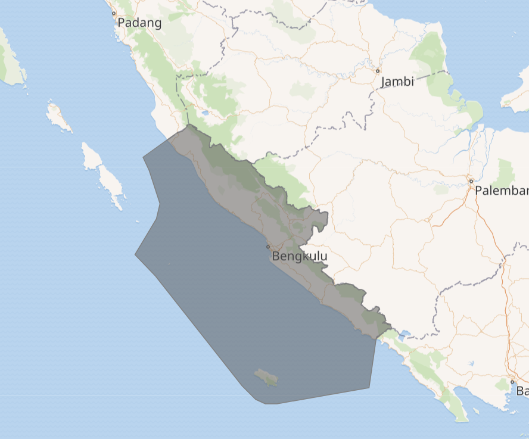
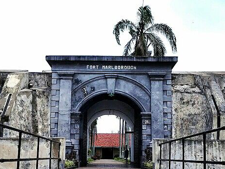
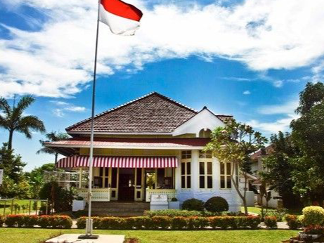
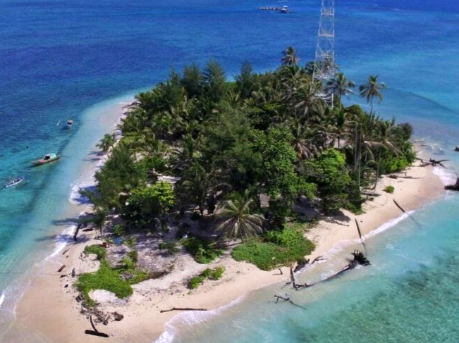
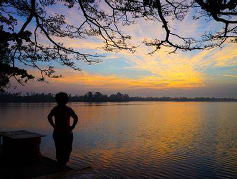
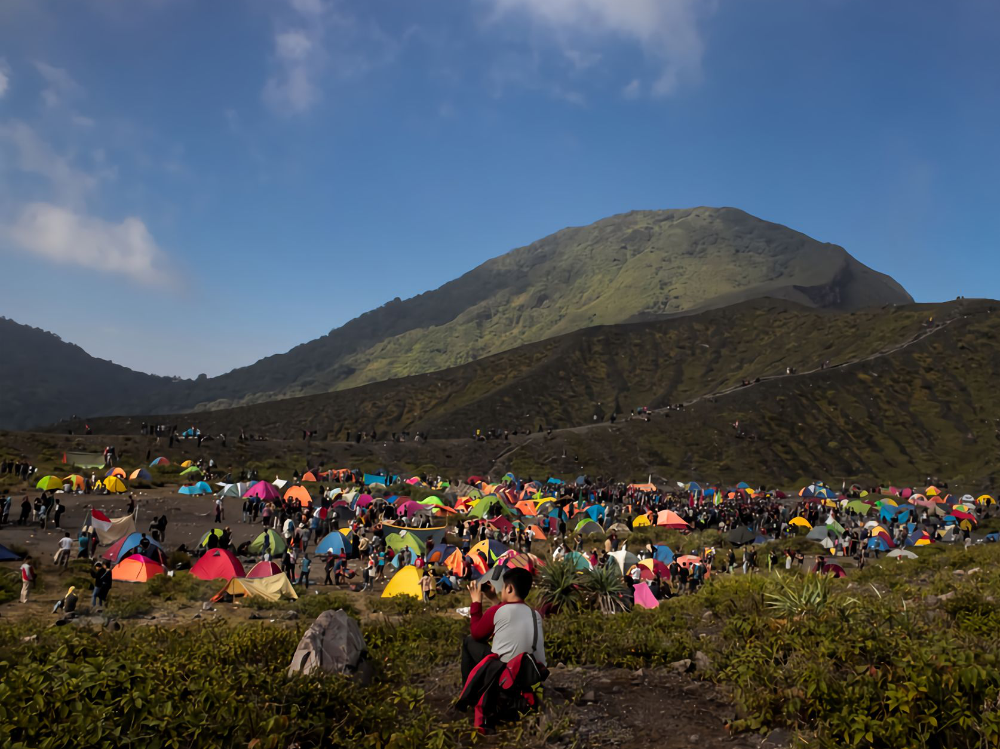

Bengkulu
City with Fascinating Nature Charms
Bengkulu adalah sebuah provinsi yang berada di Pulau Sumatera,
Indonesia. Ibu kota provinsi Bengkulu terletak di Kota Bengkulu.
Provinsi ini terletak di bagian Barat Daya Pulau Sumatra dan pantai
barat di bagian Selatan Pulau Sumatra yang berbatasan langsung dengan
provinsi Sumatera Barat, Jambi, Sumatera Selatan dan Lampung di wilayah
sekitarnya. Pada tahun 2020, jumlah penduduk provinsi ini sebanyak
2.091.314 jiwa, dengan kepadatan 105 jiwa/km²

The History Of Bengkulu
Di wilayah Bengkulu pernah berdiri kerajaan-kerajaan yang berdasarkan
etnis seperti Kerajaan Sungai Serut, Kerajaan Selebar, Kerajaan Pat
Petulai, Kerajaan Balai Buntar, Kerajaan Sungai Lemau, Kerajaan Sekiris,
Kerajaan Gedung Agung, dan Kerajaan Marau Riang. Sebagian wilayah
Bengkulu, juga pernah berada di bawah kekuasaan Kerajaan Inderapura
semenjak abad ke-17.
British East India Company (EIC) mendirikan pusat perdagangan lada.
Bencoolen yang berasal dari bahasa Inggris Cut Land yang berarti tanah
patah wilayah ini adalah wilayah patahan gempa bumi yang paling aktif di
dunia dan kemudian gudang penyimpanan di tempat yang sekarang menjadi
Kota Bengkulu. Saat itu, ekspedisi EIC dipimpinoleh Ralph Ord dan
William Cowley untuk mencari pengganti pusat perdagangan lada setelah
Pelabuhan Banten jatuh ke tangan VOC, dan EIC dilarang berdagang di
sana. Traktat dengan Kerajaan Selebar pada tanggal 12 Juli 1685
mengizinkan Inggris untuk mendirikan benteng dan berbagai gedung
perdagangan. Benteng York didirikan tahun 1685 di sekitar muara Sungai
Serut
Sejak tahun 1713, dibangun benteng Marlborough (selesai 1719) yang
hingga sekarang masih tegak berdiri. Namun, perusahaan ini lama kelamaan
menyadari tempat itu tidakmenguntungkan karena tidak bisa menghasilkan
lada dalam jumlah mencukupi.
Sejak dilaksanakannya Perjanjian London pada tahun 1824, Bengkulu
diserahkan ke Belanda, dengan imbalan Malaka sekaligus penegasan atas
kepemilikan Tumasik/Singapura dan Pulau Belitung. Sejak perjanjian itu
Bengkulu menjadi bagian dari Hindia Belanda.
Pada tahun 1930-an, Bengkulu menjadi tempat pembuangan sejumlah
aktivispendukung kemerdekaan, termasuk Sukarno. Pada masa inilah
Sukarnoberkenalan dengan Fatmawati yang menjadi istrinya.
Setelah kemerdekaan Indonesia, Bengkulu menjadi keresidenan
dalamprovinsi Sumatera Selatan. Wilayah Bengkulu dahulu juga
meliputiKawedanan Krui yang meliputi Kabupaten Lampung Barat dan
KabupatenPesisir Barat saat ini. Akan tetapi, berdasarkan hasil plebisit
padatahun 1951, Krui menjadi bagian dari Lampung. Pada tanggal 18
November1968 Bengkulu menjadi provinsi Indonesia ke-26 (termuda sebelum
TimorTimur).
Destinations

Benteng Marlborough
Keunikan Benteng Marlborough terletak pada desain arsitektur yang
menonjolkan nuansa Inggris abad ke-17. Benteng menghadap ke Samudra
Hindia. Terdapat parit selebar 7 m yang mengelilingi benteng apabila
dilihat dari bagian atas. Sekilas, bentuknya mirip seperti kura-kura.
Pantai Panjang
Pantai Panjang merupakan pantai yang berada di Provinsi Bengkulu.
Pantai ini memiliki garis pantai yang mencapai 7 km dan lebar pantai
sekitar 500 meter. Pantai Panjang terletak di Kecamatan Ratu Agung,
Kecamatan Teluk Segara, & Kecamatan Ratu Samban.

Rumah Pengasingan Soekarno
Rumah Pengasingan Soekarno menjadi salah satu tempat wisata sejarah
populer di Bengkulu. Rumah Pengasingan Soekarno bercorak gaya Eropa
dengan warna putih yang khas. Halaman depan penuh dengan rumput hijau
seperti rumah-rumah di Eropa

Pulau Tikus
Pulau Tikus adalah pulau kecil tak berpenghuni seluas lebih kurang
6.000 m terletak di perairan Pantai Bengkulu bagian dari wilayah
provinsi Bengkulu. Pulau yang dapat dilihat dari pesisir pantai di
kota Bengkulu ini ditopang gugusan terumbu karang seluas 250 hektare.

Danau Dendam Tak Sudah
Tempat wisata di Bengkulu terakhir ada Danau Dendam Tak Sudah berada
di Kelurahan Dusun Besar, Kecamatan Singaran Pati Kota Bengkulu. Luas
wilayah sekitar 559 hektare dengan permukaan 68 hektare. Danau ini
memiliki cerita misteri yang menjadi legenda di masyarakat berkaitan
dengan persoalan dendam.

Bukit Kaba
Bukit Kaba merupakan gunung berapi aktif yang berada di Selpung
Rejang, Kabupaten Rejang Lebong. Jaraknya sekitar 15 km dari Kota
Curup di sebelah tenggara. Bukit Kaba dulunya menjadi cagar alam yang
melindungi bunga Raflesia. Seiring berjalannya waktu terjadi perubahan
dari taman lindung menjadi tempat wisata alam